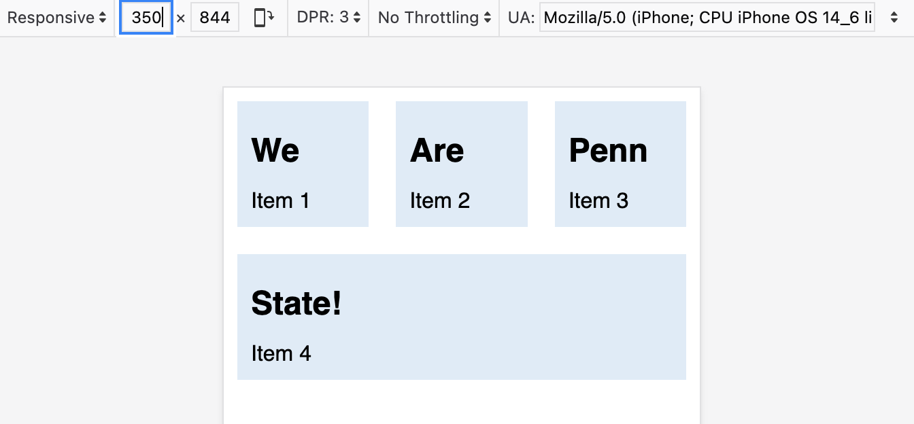
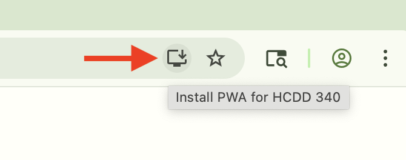
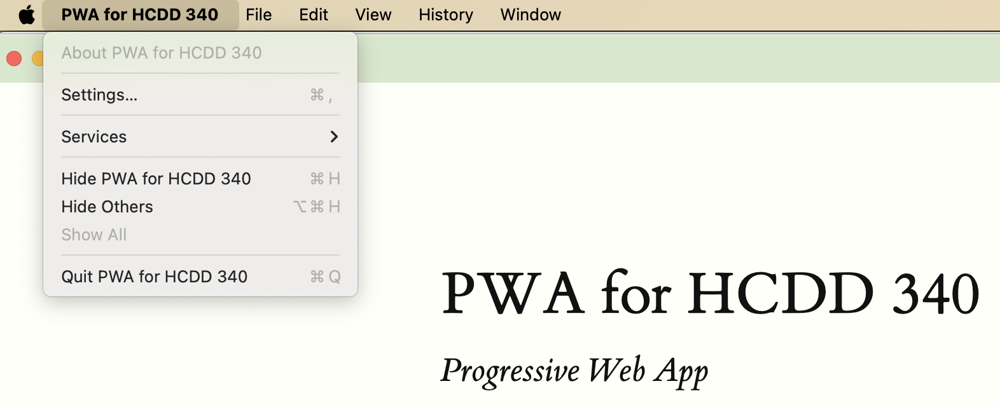

Responsive Design & PWA Manifest
Recap from last class
- Placing items in grids
Auto placement (default)
- Items are placed one per cell
- In the same order as in the code
- Default placement is along the rows
- For column placement:
grid-auto-flow: column;
- For column placement:
Line based placement
- Placing items on specific lines
- For English, column number is 1 on the left

Line based placement
Start and end lines for an item
grid-column-startgrid-column-endgrid-row-startgrid-row-end
Line based placement
Start and end lines for an item
.item {
/* start at column line 1 */
grid-column-start: 1;
/* end at column line 4 */
grid-column-end: 4;
/*start at row line 2 */
grid-row-start: 2;
/* end at row line 4 */
grid-row-end: 4;
}Shorthand for line placement
grid-columngrid-column-start/grid-column-end
grid-rowgrid-row-start/grid-row-end
Shorthand for line placement
.item {
grid-column-start: 1;
grid-column-end: 4;
grid-row-start: 2;
grid-row-end: 4;
}=
.item {
grid-column: 1 / 4;
grid-row: 2 / 4;
}Negative number for line placement
- You can use negative number
- -1: the end column or row
- count inwards using negative values
grid-template-areas
- Name areas of the grid
- Place items onto those named areas
- Very useful
grid-template-areas
.container {
display: grid;
grid-template-columns:
repeat(4,1fr);
grid-template-areas:
"h h h h"
"s c c c"
"s f f f";
}header {
grid-area: h;
}
.sidebar {
grid-area: s;
}
.content {
grid-area: c;
}
footer {
grid-area: f;
}grid-template-areas
- Every cell must be filled
- repeating name will span cells
.(period) is for empty cell
Aligning items in Grid
Similar to flexbox!
- Column axis alignment
align-selfandalign-items
- Row axis alignment
justify-itemsandjustify-self
Nesting grids
- Making a child item a
subgriddisplay: grid- Define other grid properties (columns, rows, …)
- See an example here
Today
- Responsive design
- PWA manifest
- Assignment 2
Responsive Web Design (RWD)
“Create a layout that can respond to any device being used”
Responsive Web Design (RWD)
- Devices have different display sizes
- Phones, tablets, laptops, ultra wide monitors
- Your web app should be responsive to different displays
Responsive Web Design (RWD)
- Fluid layout
- Responsive images and media
- Media queries
Responsive Web Design (RWD)
Fluid layout
- Default width in mobile browser: 980 px
- Due to historical reasons
- What if the device width ≠ 980 px?
- Applies the default width
- Then, scale down to the actual device width
- Not responsive design
Responsive Web Design (RWD)
meta element for
viewport
<meta name="viewport"
content="width=device-width, initial-scale=1">- Open Penn State website
- Open Dev Tools
- Check
<head> ... </head> metaelement forviewport?
- Check
meta element for
viewport
<meta name="viewport"
content="width=device-width, initial-scale=1">Prevents the default scaling
meta element for
viewport
<meta name="viewport"
content="width=device-width, initial-scale=1">width=device-width- Website width is the same as the device width
- i.e., not necessarily 980 px
initial-scale=1- don’t do any scaling
- not necessary for responsive design
meta element for
viewport

meta
tagResponsive Web Design (RWD)
Fluid layout
- Flexbox
- Grid
Responsive Web Design (RWD)
- Fluid layout
- Responsive images and media
- Media queries
Responsive images and media
img {
max-inline-size: 100%;
}Should be contained within their container
Responsive images
Common pattern
img {
/* Contained within the parent */
max-inline-size: 100%;
/* aspect ratio is maintained */
block-size: auto;
/* crop the image if needed to
preserve aspect ratio */
object-fit: cover;
/* How to crop (i.e., where is the
most important part) */
object-position: top center;
}Responsive images
srcset
- Same image but with different sizes
- Saves data and loading time for small devices
- Resources
Responsive Web Design (RWD)
- Fluid layout
- Responsive images and media
- Media queries
Media queries
- Selectively apply CSS rules
- For different device properties (“query”)
@media type and (feature)- type: all (default), print, screen
Media queries
body {
color: black;
background-color: grey;
}
@media print {
body {
background-color: transparent;
}
}Transparent background when printing
Media queries
@media (orientation: landscape) {
/* Styles for landscape mode. */
}
@media (orientation: portrait) {
/* Styles for portrait mode. */
}Todo
Check media query
CSS
@media screen and (orientation: landscape) {
body::after {
content: "Landscape";
}
}
@media screen and (orientation: portrait) {
body::after {
content: "Portrait";
}
}Media queries
min-width
@media (min-width: 400px) {
/* Styles for viewports wider than 400 pixels. */
}Media queries
<=
@media (width <= 400px) {
/* Styles for viewports narrower than 400 pixels. */
}Combining media queries
and
@media (min-width: 50em) and (max-width: 60em) {
/* Styles for viewports
wider than 50em
and narrower than 60em. /*
}Combining media queries
@media (50em <= width <=60em) {
/* Styles for viewports
wider than 50em
and narrower than 60em. */
}Combining media queries
or and not
@media not ((width >= 30em) or (orientation: landscape)) {
/* These styles won't be shown
if the viewport is wider than 30em,
or if the orientation is landscape. */
.navlist {
flex-direction: column;
}
}Todo
- Go to Activity 08
- For devices with width between 500px and 600px
- Set
articlebackground to be#F2665E
- Set

Todo
- What happens when device width is less than 400px?
- Can you fix that using
mediaquery?
Strategy
- For device width less than 400px
- Remove
min-width(usingunset) - Add
flex: 1(flexible sizing)
- Remove

Todo
- What happens when device width is less than 400px?
- Can you fix that using
mediaquery?
Today
- Responsive design
- PWA manifest
- Assignment 2
Progressive Web Apps
- User experience like a platform-specific app
- Installable
Manifest in PWA
- A JSON file
- Information about the app
- name, icons, …
- Required for installation
Manifest in PWA
{
"short_name": "CT",
"start_url": "/",
"icons": [
{
"src": "icon-512.png",
"sizes": "512x512"
}
],
"display": "standalone"
}Todo
- Open Activity 09 in VS Code
- Copy the URL from Live Preview
- Open the URL in Chrome
Todo

Install the PWA in Chrome
PWA Installed

Todo
- Copy the URL from Live Preview
- Open the URL in Chrome
- It will prompt to open the app

Settings similar to native apps

Uninstall the app

Edge
You can install using Safari and Edge as well
Open Activity 09 in VS Code
Copy the URL from Live Preview
Edge uses similar steps to Chrome
Safari

File –> Add to Dock
PWA Installability
- Different browsers can have different requirements
Must have a manifest
<link rel="manifest" href="manifest.json" />Each page must link to a manifest file
Manifest must have
- For Chromium-based browsers
nameorshort_name- A 192px and a 512px icon
start_urldisplay
PWA Installability
https or localhost
- Must be served:
- over https
- or,
localhost(or127.0.0.1)
- If you open
index.htmldirectly in Chrome, it won’t be installable - That’s why we are using Live Preview URLs
Todo
- Open Activity 09 in VS Code
- Copy the URL from Live Preview
- Open the URL in Chrome
- DevTools –> Application –> Manifest
- Where are these values coming from?
Todo
- Change the theme color
- #F2665E
- Install the app
Todo
- Uninstall the app
- Can you change the background color?
- #96BEE6
Todo
- How does the app change for different
displayvalues?standaloneminimal-uifullscreenbrowser
Today
- Responsive design
- PWA manifest
- Assignment 2